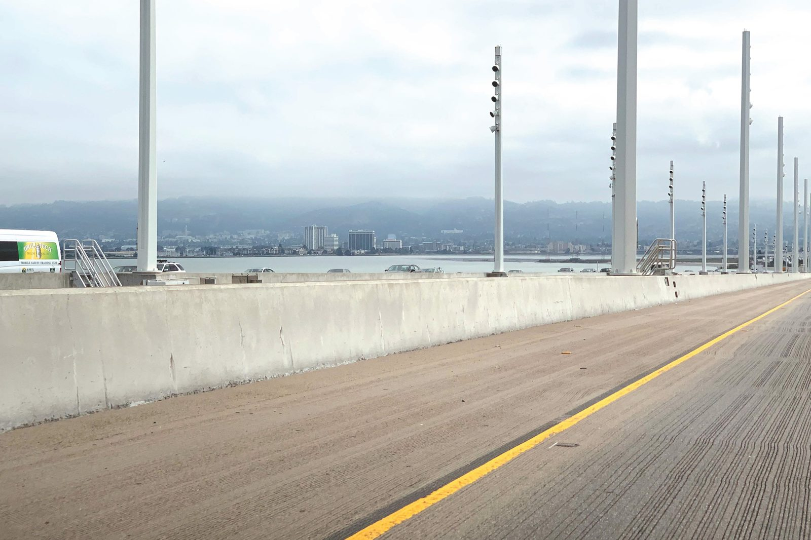
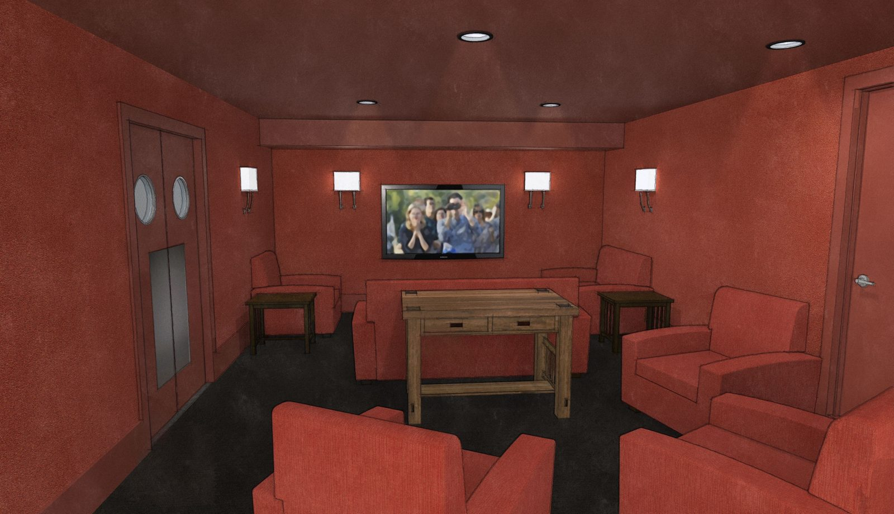
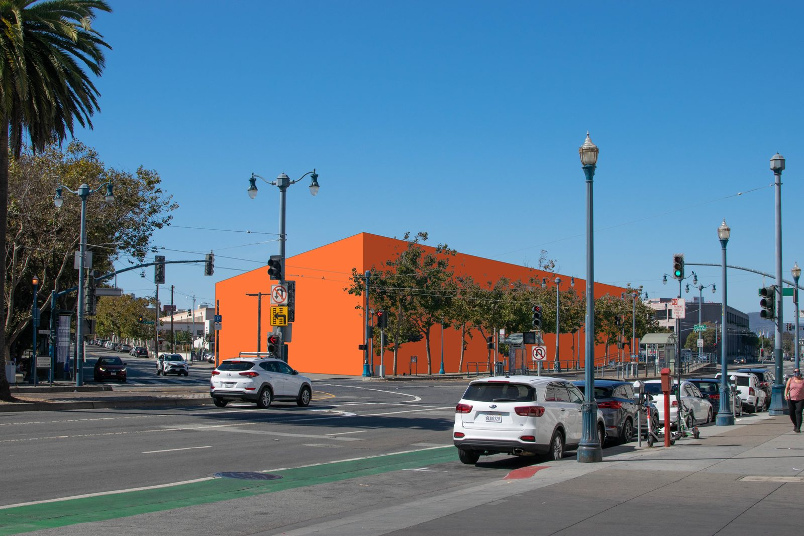
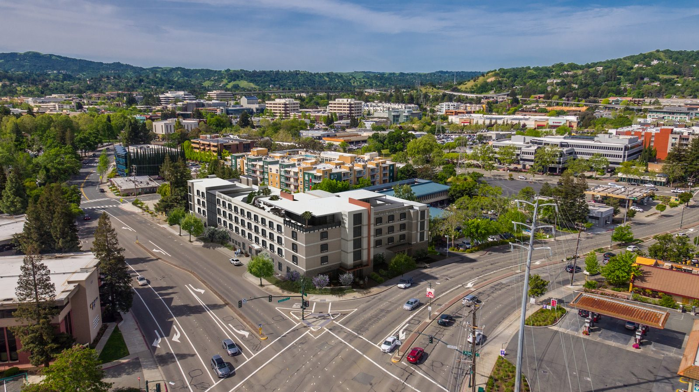
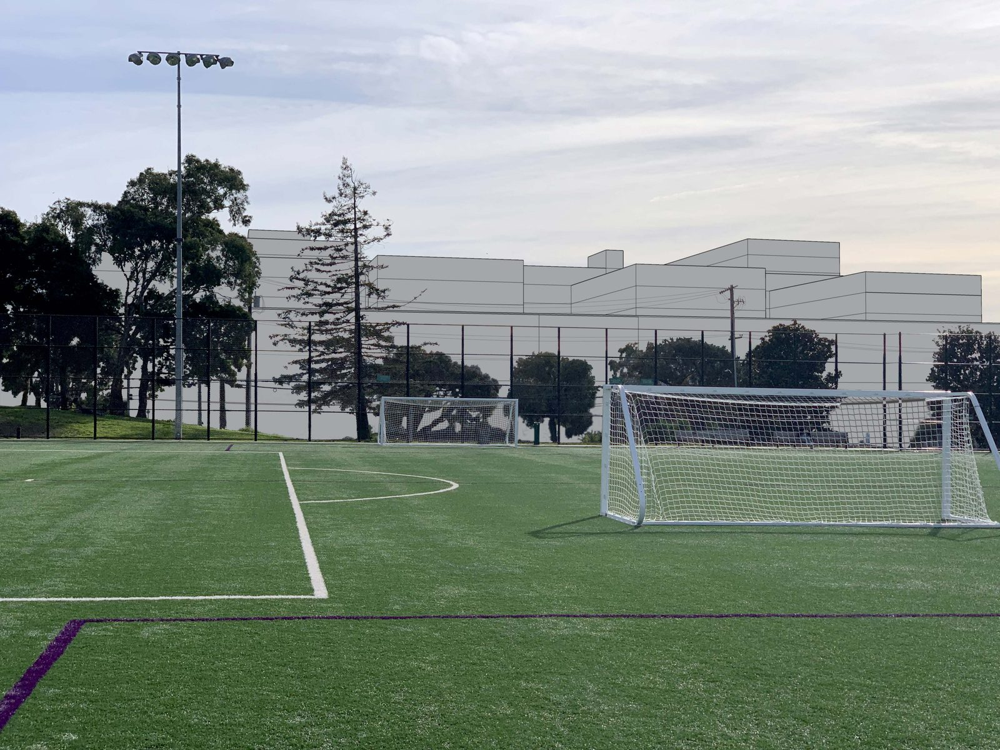

Quantitative shadow impact assessments, Section 295 compliance, shadow envelope studies, and location-duration heatmapping for CEQA and planning review.
Photorealistic visual simulations and photomontages that communicate complex design proposals to stakeholders, planning commissions, and communities.
Comprehensive daylight access analysis evaluating natural light conditions for proposed developments and their impact on surrounding properties.
Independent technical review of shadow studies, visual simulations, and environmental analyses prepared by other consultants for quality assurance.
Proprietary Parasolv shadow analysis platform enabling rapid, accurate modeling of complex shadow phenomena for California's regulatory environment.











Adam Phillips launched PreVision Design in 2010, bringing deep expertise in San Francisco's architecture, development, and entitlement processes. He has built PreVision Design into the premier resource for shadow analysis, visual simulation, and environmental consulting in California.
His technical analyses and visual simulations have been accepted by major reviewing agencies including SF Planning, Oakland Planning, SF Rec & Parks, the Port of San Francisco, OCII, and UC Berkeley.
Marin County, California
Adam Phillips, Licensed Architect
CA C-30995